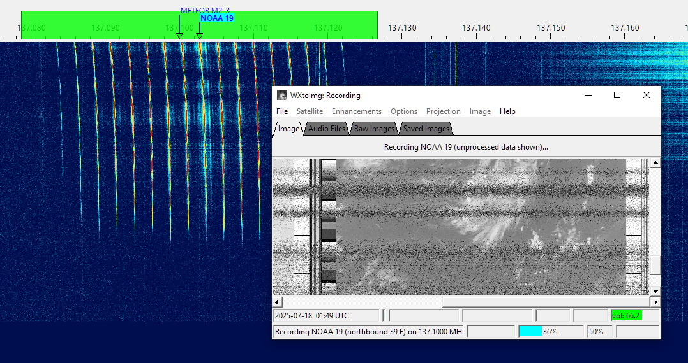
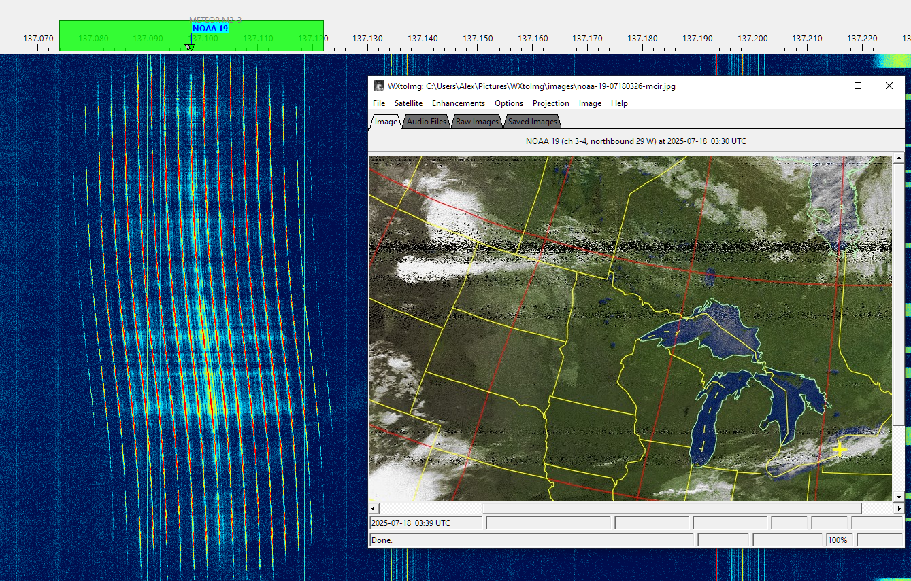

How to Receive Images from NOAA-15 and NOAA-19
An external program is needed to decode and display the weather images transmitted by the NOAA-15 and NOAA-19 satellites. In this tutorial we will use WXtoIMG.
Installing VAC
A virtual audio cable, VAC, is required to pass the satellite signals demodulated in SkyRoof to the image decoding program. Download and install VB-Audio if you do not have it yet, and reboot your system. Be sure to get the latest version (2024) of VB-Audio, the old version may not work correctly.
Setting Up WXtoIMG
download wxinst21102-beta.exe and run the installer, then start WXtoIMG;
enter your latitude and longitude when prompted;
the program tries to download the TLE data from a URL that no longer works. Download the weather.txt file manually and save it to the WXtoIMG data folder. Type this in File Explorer to find the data folder:
%appdata%\WXtoImgtick Satellite / Autodetect APT in the menu;
click on Options / Recording Options and select the Record only when active... radio button. Select the VAC cable in the soundcard drop-down list;
click on File / Record in the menu, then
- select Record and auto process;
- tick Create images;
- click on the Auto Record button.
Configuring SkyRoof
In SkyRoof:
- select the NOAA-15 or NOAA-19 satellite. If it is not in the current group, add it using the Satellites and Groups dialog;
- Select APT transmitter on the 137 MHz band from the list of transmitters;
- Select FM_D downlink mode in the drop-down list on the toolbar;
- in the Output Stream section of the Settings window:
- select Audio to VAC;
- set Gain, dB to 0;
- select the VAC in the list of audio devices;
- click on the Output Stream label on the status bar to enable the output.
Receiving Images
When the selected satellite raises above the horizon, WXtoIMG will start decoding and produce an image like this:

At the end of the pass WXtoIMG will post-process received data and display an enhanced image:
